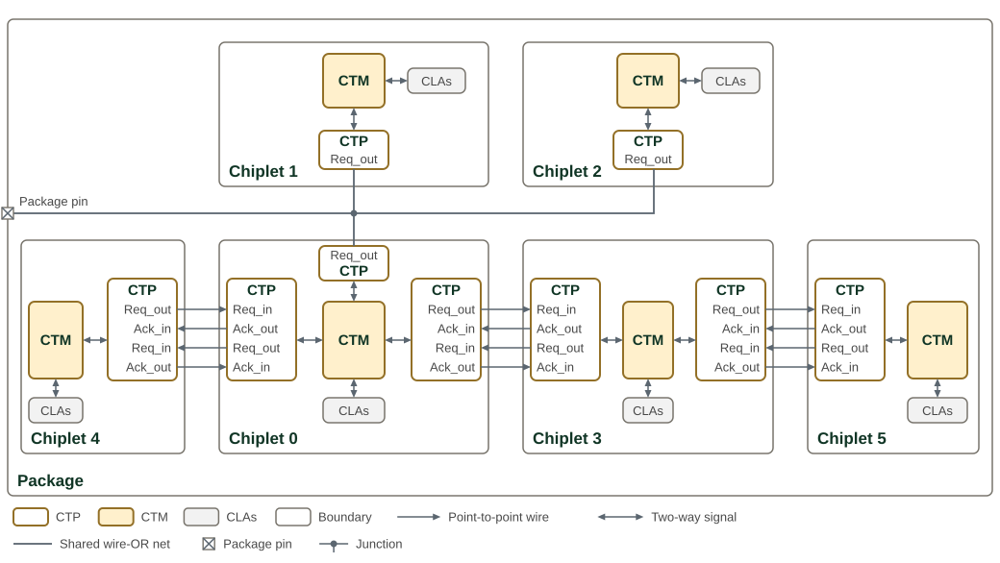

Cross-Trigger Network
The Cross-Trigger Network (CTN) implements inter-chiplet and on-chip cross-trigger routing per the Open Chiplet Cross Triggering (OCCT) specification. It combines a configurable set of Cross Trigger Ports (CTPs) facing the I/O pads with a Cross Trigger Matrix (CTM) that routes trigger pulses between all sources and sinks under AXI-Lite CSR control.
Overview
The CTN serves four purposes:
-
Die-to-die cross triggering — trigger pulses propagate between chiplets in a multi-die SiP through the CTP GPIO pads.
-
On-chip cross triggering — internal CLAs and other logic exchange trigger pulses without leaving the chiplet.
-
Unified management — a single AXI-Lite interface configures all CTP and CTM settings through a contiguous address window.
-
Clock stop coordination — the CTN OR-reduces CLA
xtrig_clk_stop_req_iinputs and combines the result with the JTAGjtag_clock_stopbit to produce the registeredstop_clks_ooutput.
Configuration Parameters
The CTN is configured through its external and internal port counts, the number of clock-stop request inputs, and the protocol of each internal CTP.
The parameters of cross_trigger_network are listed in cross_trigger_network.
The DTP passes these counts through as XTRIG_NUM_CTP, XTRIG_NUM_INT_CT, and
XTRIG_NUM_CLK_STOP_REQ. The elaborated NUM_CTP + NUM_INT_CT must equal the
generated Cross-Trigger Matrix NUM_CT_SRC and NUM_CT_DST; see
Cross-Trigger Matrix.
Architecture
SiP cross-trigger topology is an example of a SiP with a heterogeneous cross triggering scheme utilizing both wire-OR and point-to-point cross triggering interfaces:

The package carries a single cross trigger across six chiplets. Chiplets 0, 1 and 2 each have a CTP in wire-OR mode on one shared wire, and point-to-point CTP pairs link Chiplet 0 with Chiplets 3 and 4, and Chiplet 3 with Chiplet 5. Chiplet 0 is the bridge between the wire-OR group and the point-to-point chiplets. Each CTP lists its pads on the side that faces its partner, in the order that keeps every point-to-point wire straight. The wire-OR net also reaches a package pin, which makes the trigger visible outside the package and could accept an external trigger; a package pin is impractical for point-to-point signalling.
CTM programming for the example SiP lists the CTM routing that each chiplet programs for this topology.
| Chiplet | CTM forwarding |
|---|---|
0 |
From Chiplets 1 and 2 through the wire-OR CTP to the local CLAs and Chiplets 3 and 4. |
1 |
From Chiplets 0 and 2 through the wire-OR CTP to the local CLAs. |
2 |
From Chiplets 0 and 1 through the wire-OR CTP to the local CLAs. |
3 |
From Chiplet 0 to the local CLAs and Chiplet 5. |
4 |
From Chiplet 0 to the local CLAs. |
5 |
From Chiplet 3 to the local CLAs. |
No route leads from a CTP back to itself, but a CTP in wire-OR mode also receives the falling edge that it drives onto the shared wire. A trigger that Chiplet 0 forwards to its wire-OR CTP therefore comes back from that CTP one wire-OR round trip later, and Chiplet 0’s wire-OR rule forwards it again. For a trigger from Chiplet 3, the echo reaches Chiplet 0’s local CLAs and Chiplets 3 and 4 a second time, and Chiplet 3 passes it on to Chiplet 5. Triggers from Chiplet 4, Chiplet 5 and Chiplet 0’s local CLAs echo in the same way; triggers that enter from Chiplets 1 and 2 do not. Any bridge between a wire-OR group and point-to-point links behaves like this, so a destination can see one trigger twice, the second copy one wire-OR round trip after the first.
Cross Trigger Port (CTP)
The CTN supports from 1 to 32 external CTPs, set by its NUM_CTP parameter,
which defaults to 16. Each external CTP uses one GPIO pad in wire-OR mode and
two or four in point-to-point mode. These ports support both point-to-point and
wire-OR cross trigger signaling modes.
Each CTP connects to four separate I/O pads:
-
CT_Req_out - The cross trigger request output signal. The CTP asserts this signal to transmit a cross trigger in both point-to-point and wire-OR modes. In point-to-point mode the request is held high until the receiver acknowledges the request. In wire-OR mode, this signal drives the output-enable port of the I/O pad for duration defined by a pulse stretching module, and the pad output is driven static-low. Also in wire-OR mode the I/O pad input connects to the CTP without inversion. The shared wire is an open-drain active-low signal, and the CTP receives a cross trigger on its falling (assertion) edge.
-
CT_Ack_in - The cross trigger acknowledge input signal. Exclusive to point-to-point mode. The cross trigger receiver asserts this signal when it acknowledges the CTP’s cross trigger request.
-
CT_Req_in - The cross trigger request input signal. Exclusive to point-to-point mode. This is the external cross trigger request received by the CTP.
-
CT_Ack_out - The cross trigger acknowledge output signal. Exclusive to point-to-point mode. The CTP asserts this signal after receiving a cross trigger request, and de-asserts this signal after the cross trigger request is released.
When a GPIO pad is configured for cross triggering, the I/O pad assumes the role of one of these four cross trigger signals, and the pad controls and I/O data signals are connected to the associated CTP.
The logical structure of a CTP module is shown in CTP module structure in the Cross-Trigger Port architecture.
Signal names, directions, and pad controls are listed in the CTP Signal Interface.
The register interface for each CTP module is described in the CTN Memory Map section below.
Wire-OR Mode
Wire-OR mode is a 1-wire cross trigger signaling scheme compatible with many existing cross triggering implementations. This scheme is very resource efficient, as it only requires a single pin per chiplet connected to the network. However, the performance of the network decreases as the number of connected chiplets increase. Also, the duration of the cross trigger pulse must be pre-arranged across all connected chiplets.
Each chiplet has an open-drain I/O connected to a single shared wire. Any connected chiplet may pull this signal low to assert a cross trigger. Depending on the electrical requirements, one or more internal pad pull-ups or external keepers ensure the cross trigger request signal remains high when no cross trigger is asserted. To ensure no connected chiplet misses a cross trigger pulse, all chiplets transmitting a trigger pulse must stretch the pulse a mutually agreed upon length of time.
Note that in wire-OR mode the CT_Req_out signal is connected to an open-drain configured I/O pad. For I/O pads that do have explicit open-drain control, the request data signal should connect to the output-enable control pin of the I/O pad, and the output data signal of the I/O pin should be driven statically low.
The logical behavior of a CTP in wire-OR mode is shown in CTP wire-OR behavior in the Cross-Trigger Port architecture, and any number of chiplets may have their CT_Req_out pads interconnected as shown in CTP wire-OR chiplet connections in the same architecture section.
Point-to-Point Mode
Point-to-point mode utilizes a four-phase handshaking scheme to synchronize a cross trigger quickly and reliably between two chiplets without pulse stretching. While this scheme is simple and fast, it requires a dedicated CTP for each chiplet-to-chiplet interconnection, and each CTP requires four I/O pads for bi-directional communication, or two pads for unidirectional communication. All output pads are configured for push-pull operation.
The logical behavior of a CTP in point-to-point mode is shown in CTP point-to-point behavior in the Cross-Trigger Port architecture, and any two chiplets may have their four cross trigger pads cross-coupled as shown in CTP point-to-point chiplet connections in the same architecture section.
On the sender side, the receiver’s CT_Ack_out is connected to the sender’s CT_Ack_in pad. CT_Req_out asserts whenever CT_Src asserts. CT_Req_out will then remain asserted until CT_Ack_in asserts.
On the receiver side, the sender’s CT_Req_out is connected to the receiver’s CT_Req_in pad. On any positive edge of CT_Req_in, the receiver generates a pulse on CT_Dst and asserts CT_Ack_out. Deassertion proceeds in exactly the same sequence.
The timing of the request/acknowledge handshake is shown in CTP request-acknowledge timing in the Cross-Trigger Port architecture.
Cross Trigger Matrix (CTM)
The CTM is a crossbar that aggregates and statically routes cross trigger pulses between various sources and sinks. Typical connections to the CTM include Core Logic Analyzers (CLAs) and CTPs, including other miscellaneous devices. The CTM is compatible with CTPs operating in either of the two signaling modes, point-to-point or wire-OR. Typically, each device or logic module connected to the CTM will act as both a source and a sink for cross trigger pulses.
The source selection and destination routing performed by the CTM are shown in CTM routing structure in the Cross-Trigger Matrix architecture.
The CTM is programmed at runtime via firmware or debug transactions. Proper configuration of the CTMs in each chiplet will minimize trigger latency and prevent loops in the SiP cross trigger network. Configuration is accomplished via CSRs. The CTM register interface is described in the CTN Memory Map section below, and Programming gives the order in which to program the CTPs and the CTM.
Address Map
The CTN provides a unified CSR address space accessed via a single AXI-Lite
subordinate port. An internal AXI-Lite crossbar (axi_lite_xbar) routes
transactions to the CTM and external CTPs based on address decoding.
CTN address allocation lists the CTM and external-CTP address ranges.
| Component | Address Range | Size | Description |
|---|---|---|---|
CTM |
0x0000 - 0x01FF |
512 bytes |
Cross Trigger Matrix configuration registers (one 8-byte |
CTP[0] |
0x0200 - 0x020F |
16 bytes |
External CTP 0 configuration |
CTP[1] |
0x0210 - 0x021F |
16 bytes |
External CTP 1 configuration |
… |
… |
… |
… |
CTP[15] |
0x02F0 - 0x02FF |
16 bytes |
External CTP 15 configuration |
Internal CTPs |
No CSR address |
N/A |
Configured via build-time parameters only |
The table shows the default 16 external CTPs. External CTP n occupies the
16 bytes from 0x200 + 0x10*n.
The crossbar is configured with MaxMstTrans=1 and MaxSlvTrans=1, serializing
all CSR accesses. This simplification reduces arbitration logic at the cost of
concurrent access capability.
Internal vs External CTP Architecture
The CTN instantiates NUM_CTP external CTPs, 16 by default, using the full
cross_trigger_port module with CSR interface, and NUM_INT_CT internal CTPs,
10 by default, using only the cross_trigger_port_core module without
registers.
External and internal CTP comparison compares the modules, configuration, and connections used for external and internal CTPs.
| Aspect | External CTP | Internal CTP |
|---|---|---|
Module |
|
|
CSR Interface |
16-byte AXI-Lite address space |
None (build-time parameters) |
GPIO Interface |
4-pad interface to die I/O |
Logical signals to internal CLAs |
Configuration |
Runtime via CSRs (mode, invert, stretch_mult, reset) |
Build-time via |
Index Range |
ctm_ct_src/dst[0:15] |
ctm_ct_src/dst[16:25] |
Signal Mapping |
Standard GPIO pad controls |
Repurposed GPIO signals (see Internal CTP wire-OR connections and Internal CTP point-to-point connections) |
Internal CTP Signal Remapping
Internal CTPs reuse the cross_trigger_port_core GPIO interface but connect to
logical signals rather than physical pads. The INT_CT_MODE parameter bits are
inverted before use: ModeWireOr = ~INT_CT_MODE[i]. This means
INT_CT_MODE[i]=0 selects Wire-OR mode, while INT_CT_MODE[i]=1 selects
Point-to-Point mode.
The internal wire-OR request from a CLA is active-high, while the CTP core
receives a wire-OR cross trigger on the falling edge of an idle-high wire. The
network therefore inverts ctm_dst_req_i[i] before ct_req_out_din, so an
internal CTP receives a cross trigger on the rising edge of the CLA request.
Wire-OR Mode (INT_CT_MODE[i]=0, internal ModeWireOr=1):
Internal CTP wire-OR connections maps the CTP core signals to internal connections in wire-OR mode.
| CTP Core Signal | Internal Connection |
|---|---|
|
→ |
|
← |
All other signals |
Unused (tied to constants) |
Point-to-Point Mode (INT_CT_MODE[i]=1, internal ModeWireOr=0):
Internal CTP point-to-point connections maps the CTP core signals to internal connections in point-to-point mode.
| CTP Core Signal | Internal Connection |
|---|---|
|
→ |
|
← |
|
← |
|
→ |
This remapping allows internal CTPs to operate in either mode without physical GPIO pads, enabling on-chip cross-triggering between CLAs and the external cross-trigger network.
Signal Flow
External Cross Trigger Flow
-
Outgoing Trigger: CTM ct_src → CTP ct_src_i → GPIO pads
-
Incoming Trigger: GPIO pads → CTP ct_dst_o → CTM ct_dst_i
Internal Cross Trigger Flow
-
To Internal Sink: CTM ct_src → Internal CTP → ctm_src_req_o
-
From Internal Source: ctm_dst_req_i → Internal CTP → CTM ct_dst
Clock Stop Control
The ctn_clock_stop_ctrl module aggregates clock stop requests from multiple
sources using a two-stage OR-tree architecture. The module separates CLA-only
status from the combined functional halt signal to support independent JTAG
visibility and chiplet clock gating control. The CTN sizes its request input
with its own NUM_CLK_STOP_REQ parameter, which defaults to 9.
The parameters and ports of ctn_clock_stop_ctrl are listed in ctn_clock_stop_ctrl.
The aggregation logic operates as follows:
-
CLA OR-Tree: All CLA request inputs are OR-reduced combinationally:
cla_clk_stop_req = |clk_stop_req_i -
Combined Request: JTAG and CLA requests are OR-combined:
clk_stop_req_combined = jtag_clock_stop_i | cla_clk_stop_req -
Synchronization and Output Registration: The combined request passes through a two-flop synchronizer into
clk_iand then an output register, sostop_clks_ofollows a change in either request after threeclk_icycles.
The synchronizer resolves the asynchronous JTAG and CLA requests into clk_i,
and the output register keeps glitches out of the chiplet’s functional clock
gating logic. The combinatorial cla_clock_stop_o
output provides immediate visibility of CLA activity to the JTAG interface,
allowing debuggers to distinguish between JTAG-initiated and CLA-initiated clock
stops.
Port Indexing
CTN matrix port indices maps CTM port indices to external CTPs, internal CTPs, and clock-stop connections.
| Port Index | Description |
|---|---|
0 to N-1 |
External CTPs (NUM_CTP) |
N to N+M-1 |
Internal CTPs (NUM_INT_CT) |
Where N = NUM_CTP and M = NUM_INT_CT. This indexing is used for CTM ct_dst_i and ct_src_o port assignment and CTM routing configuration registers.
Interface
Cross Trigger Port (CTP)
For the module diagram and signalling modes, see CTN Architecture.
Each CTP is built on cross_trigger_port_core. Its operating mode resets to
wire-OR: the CSR MODE field of an external CTP resets to 0, which selects
wire-OR, and 1 selects peer-to-peer. INT_CT_MODE sets the mode of each
internal CTP.
The parameters and ports of cross_trigger_port_core are listed in cross_trigger_port_core.
Cross Trigger Matrix (CTM)
The CTM has the following data ports and logical structure:
-
CT_Src[N-1:0] - Cross trigger pulse output signals from the CTM to CLAs, CTPs, or other cross trigger sinking devices, where N is the number of these cross trigger sinks.
-
CT_Dst[M-1:0] - Cross trigger pulse input signals to the CTM from CLAs, CTPs, or other cross trigger generating devices, where M is the number of these cross trigger sources.
Cross Trigger Network Module Interface
The parameters and ports of cross_trigger_network are listed in cross_trigger_network.
Dependencies
The CTN depends on the following components:
-
hw/ip/cross_trigger/cross_trigger_port- Cross Trigger Port IP -
hw/ip/cross_trigger/cross_trigger_matrix- Cross Trigger Matrix IP -
vendor/pulp-platform/axi- AXI infrastructure (axi_lite_xbar)
Programming
Cross-trigger configuration is static. Software programs every external CTP from the SiP cross-trigger topology once per boot, then opens the CTM routes that use those ports, and leaves both unchanged for the rest of the session. Register offsets are relative to the CTN base address; CTN address allocation lists the CTM and CTP windows.
Requirements
-
Both ends of a CTP link use the same protocol and polarity, and the board determines both:
-
A shared wire-OR line with pull-ups uses
MODE= 0 andINVERT= 0; with pull-downs it usesMODE= 0 andINVERT= 1. -
A point-to-point link with active-high signaling uses
MODE= 1 andINVERT= 0; with active-low signaling it usesMODE= 1 andINVERT= 1.
-
-
The configuration stays fixed for the session. Change a port whose routes are already open only through the sequence in Changing a Port’s Configuration.
-
After reset every CTP is in wire-OR mode with
INVERT= 0, and every CTM output is disabled because eachCT_DST_SELECTresets to zero. Until software writesCONFIG, a CTP drives neitherCT_Req_outnorCT_Ack_out, so the board pulls set the level the far end sees on those lines. Choose pulls that the far end reads as deasserted. -
Internal CTPs have no registers. The
INT_CT_MODEparameter fixes their protocol. -
The CTM configuration across the SiP is free of loops. A wire-OR CTP receives its own assertion of the shared wire, so a route from a wire-OR CTP back to the same CTP is a loop.
Initialization Sequence
-
For each external CTP
ithat the SiP uses:-
For a wire-OR port, write
STRETCH_MULTwith the pulse width the shared wire requires, minus one. -
Write
CONFIGwithMODEandINVERTfor the board in a single write, withRESET= 0.
-
-
For each CTM output
nthat carries triggers, writeCT_SRC[n].CONFIG_0.CT_DST_SELECT. Setting bitmforwards the triggers that portmreceives to portn. CTN matrix port indices maps port indices to external and internal CTPs.
The order matters. A CTM route delivers triggers to a CTP from the moment it
is written. A CTP still in its reset-default wire-OR mode transmits a trigger
by driving CT_Req_out to the asserted wire-OR level, which is low with
INVERT = 0. A point-to-point far end built for active-low signaling reads
that level as a request. Writing MODE and INVERT together keeps a port from
running, even briefly, with one field set for the board and the other still
at its reset value.
The following example configures external CTP 0 for an active-low point-to-point link and external CTP 1 for a wire-OR line with pull-ups, then routes triggers between them.
#define CTP_REG(i, reg) (ctn_base + CROSS_TRIGGER_NETWORK_CTP_BASE_ADDR(i) + (reg))
#define CTM_ROUTE(n) (ctn_base + CROSS_TRIGGER_NETWORK_CTM_BASE_ADDR + \
CROSS_TRIGGER_MATRIX_CT_SRC_CONFIG_0_BASE_ADDR(n))
#define CONFIG_MODE_P2P (1u << 0)
#define CONFIG_INVERT (1u << 1)
#define CONFIG_RESET (1u << 2)
// Configure every port before opening any route.
write32(CTP_REG(0, CROSS_TRIGGER_PORT_CONFIG_BASE_ADDR), CONFIG_MODE_P2P | CONFIG_INVERT);
write32(CTP_REG(1, CROSS_TRIGGER_PORT_STRETCH_MULT_BASE_ADDR), 15); // 16-cycle pulses
write32(CTP_REG(1, CROSS_TRIGGER_PORT_CONFIG_BASE_ADDR), 0);
// Triggers received on port 1 go out on port 0, and the reverse.
write32(CTM_ROUTE(0), 1u << 1);
write32(CTM_ROUTE(1), 1u << 0);Changing a Port’s Configuration
Changing CONFIG after routes are open is discouraged. When a link must
change protocol or polarity, for example after both chiplets agree on a new
topology, reconfigure port p as follows:
-
Close every route that involves port
p: write zero toCT_SRC[p], and clear bitpin every otherCT_SRC[n]. -
Poll
STATUS.BUSYof portpuntil it reads 0. If a point-to-point far end never acknowledges andBUSYstays 1, recover the port as described in Handshake Deadlock Recovery. -
Write
CONFIGwith the newMODEandINVERTin a single write. -
Reopen the routes.
The CTP holds its point-to-point handshake idle while wire-OR mode is
selected. After point-to-point mode is selected, the handshake ignores
CT_Req_in and CT_Ack_in until their synchronized levels are valid.
Closing the routes first keeps triggers from being sent or forwarded while
the two ends of the link disagree.
Handshake Deadlock Recovery
A point-to-point sender waits for CT_Ack_in without a timeout. If the far
end stops responding, STATUS.REQ_OUT and STATUS.BUSY stay 1, and the port
transmits no further triggers.
-
Write
CONFIGwithRESET= 1, keepingMODEandINVERTunchanged.CT_Req_outdeasserts, and the port discards triggers delivered to it whileRESETis set. -
Write
CONFIGwithRESET= 0.
RESET does not affect the receiving side. A far end that holds CT_Req_in
asserted keeps STATUS.BUSY at 1 until it releases the request.
Memory Map
Memory Map
The Cross Trigger Network combines the Cross Trigger Matrix (CTM) and Cross Trigger Port (CTP) registers into a unified address space. Its generated map keeps the CTP instance count and stride with the allocated apertures:
| Base Address | End Address | Size | Decoded Extent | Unit | Instances | Stride | Description | Hole in Extent (R / W) | Past Extent (R / W) |
|---|---|---|---|---|---|---|---|---|---|
0x00000000 |
0x000001FF |
512 B |
208 B |
Cross Trigger Matrix Address Map |
1 instance |
- |
Configuration registers for the cross trigger matrix |
OKAY, 0x0 / OKAY |
DECERR, 0xBADCAB1E / DECERR |
0x00000200 |
0x000002FF |
256 B |
252 B |
Cross Trigger Port Address Map |
16 instances |
16 B |
Configuration and status registers for the cross trigger port |
OKAY, 0x0 / OKAY |
OKAY, 0x0 / OKAY |
The CTN adds no CTN-specific registers; it decodes the AXI-Lite CSR interface onto the CTM and CTP blocks it instantiates. The composite SystemRDL top is the common source for these addresses and for the generated RTL constants.
The last two columns state how the network answers a 32-bit access that no
register backs, as seen at its AXI-Lite CSR port, and
Decode Response Codes
defines them and their codes. An address above 0x2FF matches no block and
answers DECERR, with read data 0xBADCAB1E.
Detailed Register Map
Cross Trigger Matrix Registers
Cross Trigger Matrix Address Map
Configuration registers for the cross trigger matrix
Register Arrays:
- CT_SRC[26].CONFIG_0: 26 registers, base 0x0, stride 0x8
Register List:
| Address | Name | Access | Description |
|---|---|---|---|
| 0x0 - 0xC8 | CT_SRC[26].CONFIG_0 | RW | Cross Trigger Source Configuration - CT_Dst select mask |
Register Details:
CT_SRC[26].CONFIG_0
| Bits | Field | Access | Reset | Description |
|---|---|---|---|---|
| 31:26 | Reserved | - | - | Reserved |
| 25:0 | CT_DST_SELECT | RW | 0x0 | Selects the CT_Dst port(s) to forward on the CT_Src output at this array index. Each bit corresponds to one CT_Dst port, from CT_Dst[0] at bit 0 upwards. Multiple ports may be selected as a trigger source. All selected source ports are then OR'd together to produce the CT_Src output. Set this register to all-zero to disable that output. |
Cross Trigger Port Registers
Each CTP window repeats the following register layout.
Cross Trigger Port Address Map
Configuration and status registers for the cross trigger port
Register List:
| Address | Name | Access | Description |
|---|---|---|---|
| 0x0 | CONFIG | RW | Cross Trigger Port Configuration |
| 0x4 | STATUS | R | Cross Trigger Port Status. Writes complete with an OKAY response and leave the register unchanged. |
| 0x8 | STRETCH_MULT | RW | Pulse Stretch Multiplier |
Register Details:
CONFIG
| Bits | Field | Access | Reset | Description |
|---|---|---|---|---|
| 31:3 | Reserved | - | - | Reserved |
| 2 | RESET | RW | 0x0 | While set, holds the outgoing point-to-point handshake idle with CT_Req_out deasserted and discards core-side cross trigger pulses for transmission. The incoming handshake keeps running. Set and then clear it to recover a handshake deadlock. |
| 1 | INVERT | RW | 0x0 | Inverts the sense of the incoming and outgoing GPIO signals. 0 - No inversion. Wire-OR mode uses active-low signaling with active or passive pull-ups. Point-to-point mode uses active-high signaling. 1 - All inputs and outputs of I/Os are inverted. Wire-OR mode uses active-high signaling with active or passive pull-downs. Point-to-point mode uses active-low signaling. Write it in the same access as MODE. |
| 0 | MODE | RW | 0x0 | Selects the operating mode of the CTP. 0 - Wire-OR, 1 - Point-to-Point. Program it once, in the same write as INVERT, from the package's cross trigger topology, before any cross trigger matrix route selects or targets this port. While wire-OR is selected the point-to-point handshake is held idle with its request deasserted; after point-to-point is selected, the handshake ignores the CT_Req_in and CT_Ack_in pads until their synchronized levels are valid. |
STATUS
| Bits | Field | Access | Reset | Description |
|---|---|---|---|---|
| 31:8 | Reserved | - | - | Reserved |
| 7 | ACK_OUT | R | 0x0 | Readout of the current CT_Ack_out level with CONFIG.INVERT undone, so 1 means the acknowledge is asserted whatever the pad polarity. Reads 0 in wire-OR mode. |
| 6 | REQ_IN | R | 0x0 | Readout of the current synchronized CT_Req_in level with CONFIG.INVERT undone, so 1 means the request is asserted whatever the pad polarity. |
| 5 | ACK_IN | R | 0x0 | Readout of the current synchronized CT_Ack_in level with CONFIG.INVERT undone, so 1 means the acknowledge is asserted whatever the pad polarity. |
| 4 | REQ_OUT | R | 0x0 | Readout of the current CT_Req_out level with CONFIG.INVERT undone, so 1 means the request is asserted whatever the pad polarity. Reads 0 in wire-OR mode. |
| 3:1 | Reserved | - | - | Reserved |
| 0 | BUSY | R | 0x0 | Indicates whether a pulse assertion or handshake is currently in progress. 0 - Pulse or handshake is not in progress, 1 - Pulse or handshake is currently in progress |
STRETCH_MULT
| Bits | Field | Access | Reset | Description |
|---|---|---|---|---|
| 31:16 | Reserved | - | - | Reserved |
| 15:0 | STRETCH_MULT | RW | 0x0 | The number of clock cycles a core-side cross trigger pulse is stretched on the GPIO pin when in wire-OR mode. Whenever a core-side pulse is received, the generated GPIO pulse has a width of (STRETCH_MULT+1) clock cycles. |
Composite Network Registers
This map gives the CTM and CTP register offsets within the generated CTN composition. The individual block maps above give offsets within each block.
Cross Trigger Network Address Map
Cross trigger matrix and externally visible cross trigger ports
Register Arrays:
- CT_SRC[26].CONFIG_0: 26 registers, base 0x0, stride 0x8
- ctp[16].CONFIG: 16 registers, base 0x200, stride 0x10
- ctp[16].STATUS: 16 registers, base 0x204, stride 0x10
- ctp[16].STRETCH_MULT: 16 registers, base 0x208, stride 0x10
Register List:
| Address | Name | Access | Description |
|---|---|---|---|
| 0x0 - 0xC8 | CT_SRC[26].CONFIG_0 | RW | Cross Trigger Source Configuration - CT_Dst select mask |
| 0x200 - 0x2F0 | ctp[16].CONFIG | RW | Cross Trigger Port Configuration |
| 0x204 - 0x2F4 | ctp[16].STATUS | R | Cross Trigger Port Status. Writes complete with an OKAY response and leave the register unchanged. |
| 0x208 - 0x2F8 | ctp[16].STRETCH_MULT | RW | Pulse Stretch Multiplier |
Register Details:
CT_SRC[26].CONFIG_0
| Bits | Field | Access | Reset | Description |
|---|---|---|---|---|
| 31:26 | Reserved | - | - | Reserved |
| 25:0 | CT_DST_SELECT | RW | 0x0 | Selects the CT_Dst port(s) to forward on the CT_Src output at this array index. Each bit corresponds to one CT_Dst port, from CT_Dst[0] at bit 0 upwards. Multiple ports may be selected as a trigger source. All selected source ports are then OR'd together to produce the CT_Src output. Set this register to all-zero to disable that output. |
ctp[16].CONFIG
| Bits | Field | Access | Reset | Description |
|---|---|---|---|---|
| 31:3 | Reserved | - | - | Reserved |
| 2 | RESET | RW | 0x0 | While set, holds the outgoing point-to-point handshake idle with CT_Req_out deasserted and discards core-side cross trigger pulses for transmission. The incoming handshake keeps running. Set and then clear it to recover a handshake deadlock. |
| 1 | INVERT | RW | 0x0 | Inverts the sense of the incoming and outgoing GPIO signals. 0 - No inversion. Wire-OR mode uses active-low signaling with active or passive pull-ups. Point-to-point mode uses active-high signaling. 1 - All inputs and outputs of I/Os are inverted. Wire-OR mode uses active-high signaling with active or passive pull-downs. Point-to-point mode uses active-low signaling. Write it in the same access as MODE. |
| 0 | MODE | RW | 0x0 | Selects the operating mode of the CTP. 0 - Wire-OR, 1 - Point-to-Point. Program it once, in the same write as INVERT, from the package's cross trigger topology, before any cross trigger matrix route selects or targets this port. While wire-OR is selected the point-to-point handshake is held idle with its request deasserted; after point-to-point is selected, the handshake ignores the CT_Req_in and CT_Ack_in pads until their synchronized levels are valid. |
ctp[16].STATUS
| Bits | Field | Access | Reset | Description |
|---|---|---|---|---|
| 31:8 | Reserved | - | - | Reserved |
| 7 | ACK_OUT | R | 0x0 | Readout of the current CT_Ack_out level with CONFIG.INVERT undone, so 1 means the acknowledge is asserted whatever the pad polarity. Reads 0 in wire-OR mode. |
| 6 | REQ_IN | R | 0x0 | Readout of the current synchronized CT_Req_in level with CONFIG.INVERT undone, so 1 means the request is asserted whatever the pad polarity. |
| 5 | ACK_IN | R | 0x0 | Readout of the current synchronized CT_Ack_in level with CONFIG.INVERT undone, so 1 means the acknowledge is asserted whatever the pad polarity. |
| 4 | REQ_OUT | R | 0x0 | Readout of the current CT_Req_out level with CONFIG.INVERT undone, so 1 means the request is asserted whatever the pad polarity. Reads 0 in wire-OR mode. |
| 3:1 | Reserved | - | - | Reserved |
| 0 | BUSY | R | 0x0 | Indicates whether a pulse assertion or handshake is currently in progress. 0 - Pulse or handshake is not in progress, 1 - Pulse or handshake is currently in progress |
ctp[16].STRETCH_MULT
| Bits | Field | Access | Reset | Description |
|---|---|---|---|---|
| 31:16 | Reserved | - | - | Reserved |
| 15:0 | STRETCH_MULT | RW | 0x0 | The number of clock cycles a core-side cross trigger pulse is stretched on the GPIO pin when in wire-OR mode. Whenever a core-side pulse is received, the generated GPIO pulse has a width of (STRETCH_MULT+1) clock cycles. |